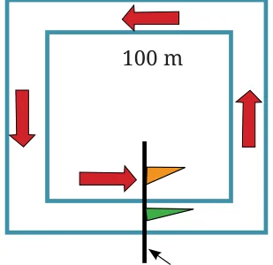
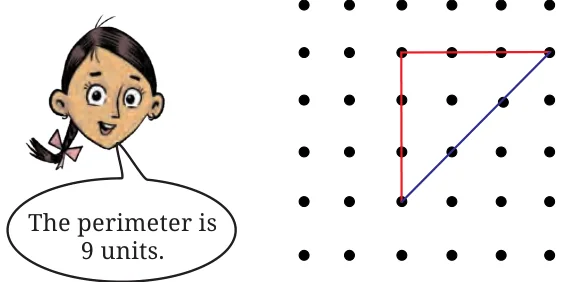
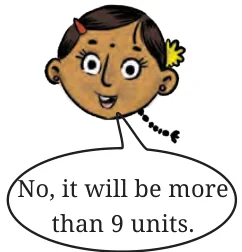
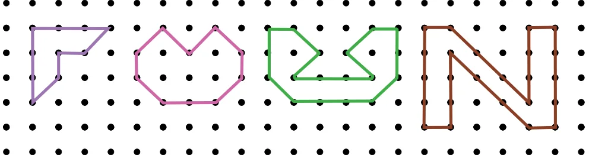

- Find out the total distance Akshi has covered in 5 rounds.
- Find out the total distance Toshi has covered in 7 rounds. Who ran a longer distance?
- Think and mark the positions as directed—
- Mark ‘A’ at the point where Akshi will be after she ran 250 m.
- Mark ‘B’ at the point where Akshi will be after she ran 500 m.
- Now, Akshi ran 1000 m. How many full rounds has she finished running around her track? Mark her position as ‘C’.
- Mark ‘X’ at the point where Toshi will be after she ran 250 m.
- Mark ‘Y’ at the point where Toshi will be after she ran 500 m.
- Now, Toshi ran 1000 m. How many full rounds has she finished running around her track? Mark her position as ‘Z’.
Deep Dive: In races, usually there is a common finish line for all the runners. Here are two square running tracks with the inner track of 100 m each side and outer track of 150 m each side. The common finishing line for both runners is shown by the flags in the figure which are in the center of one of the sides of the tracks.
If the total race is of 350 m, then we have to find out where the starting positions of the two runners should be on these two tracks so that they both have a common finishing line after they run for 350 m. Mark the starting points of the runner on the inner track as ‘A’ and the runner on the outer track as ‘B’.

Estimate and Verify
Take a rough sheet of paper or a sheet of newspaper. Make a few random shapes by cutting the paper in different ways. Estimate the total length of the boundaries of each shape then use a scale or measuring tape to measure and verify the perimeter for each shape.
Akshi says that the perimeter of this triangle shape is 9 units. Toshi says it can’t be 9 units and the perimeter will be more than 9 units. What do you think?


This figure has lines of two different unit lengths. Measure the lengths of a red line and a blue line; are they same? We will call the red lines—straight lines and the blue lines—diagonal lines. So, the perimeter of this triangle is 6 straight units \(+ 3\) diagonal units. We can write this in a short form as: \(6s + 3d\) units.
Write the perimeters of the figures below in terms of straight and diagonal units.
